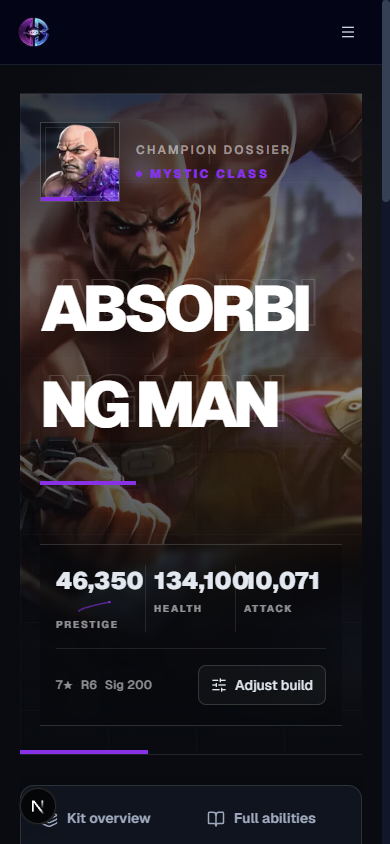
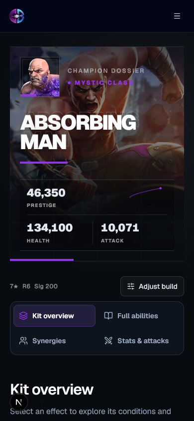
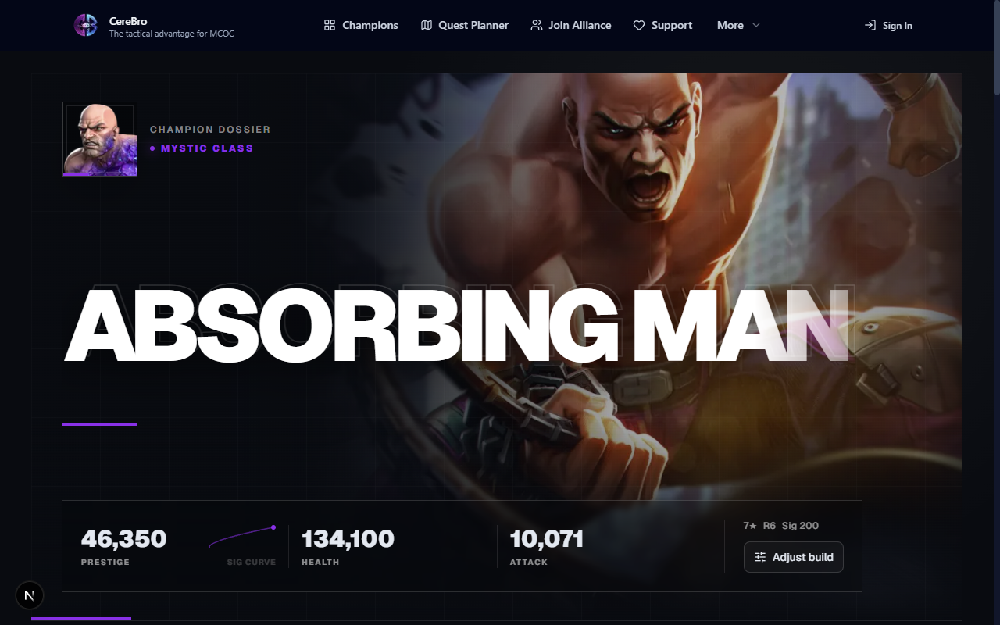
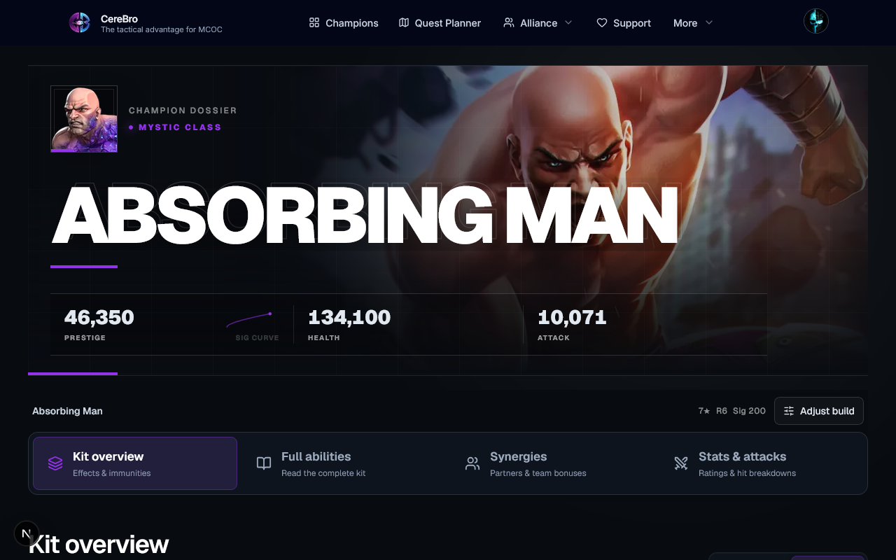
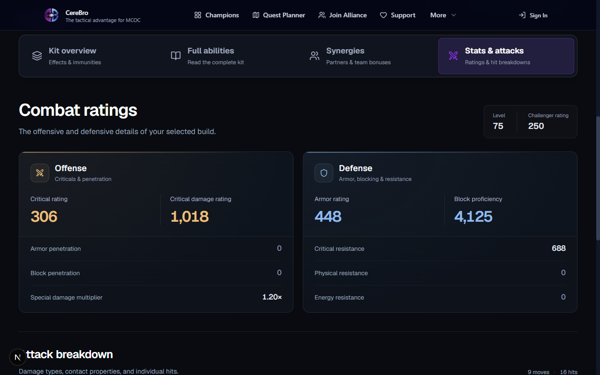
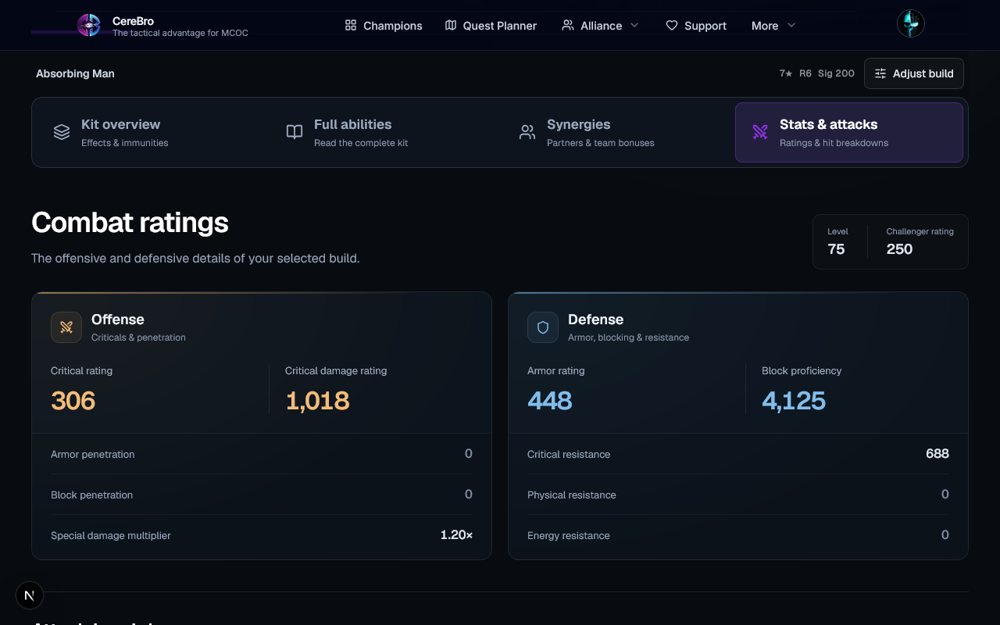
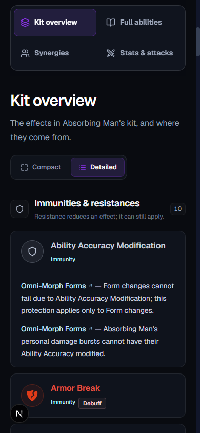
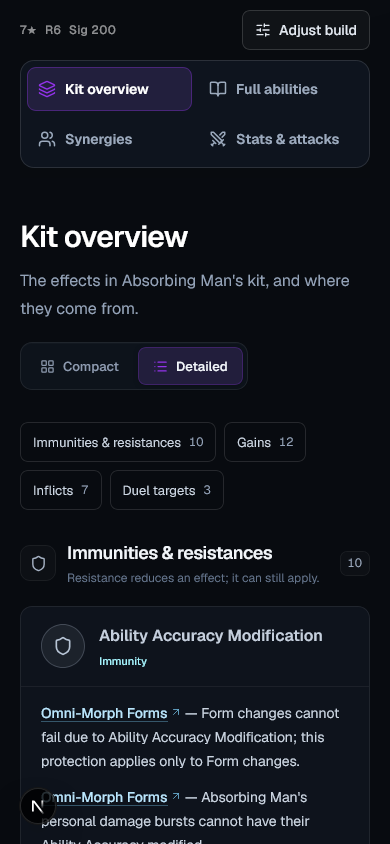
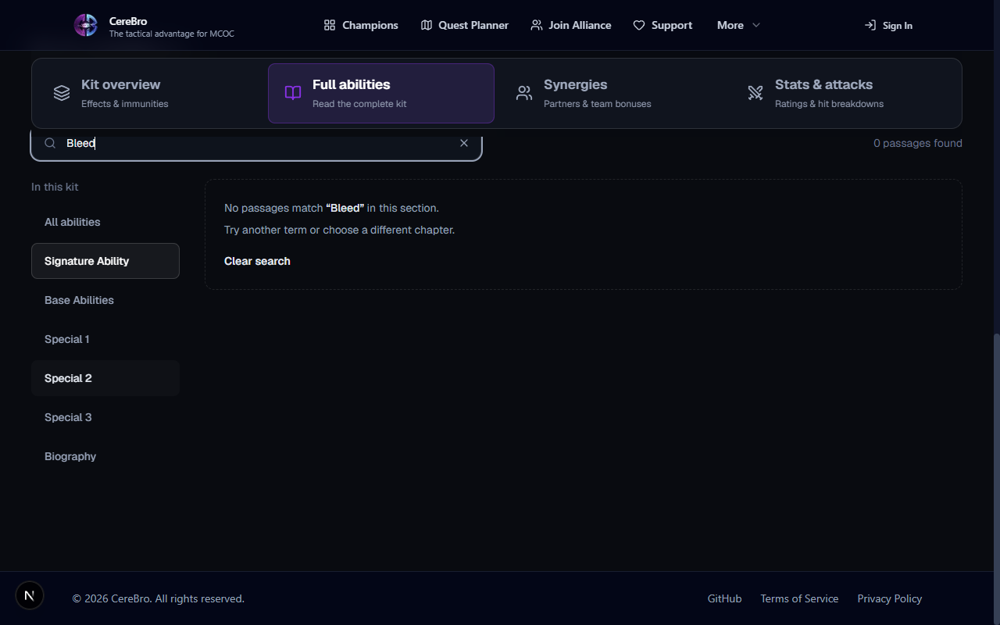
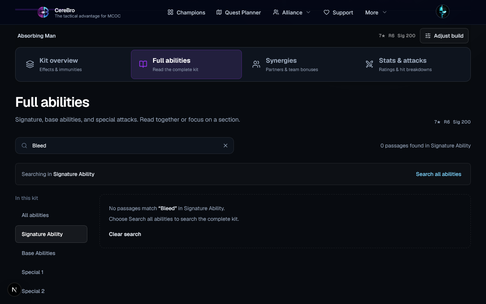
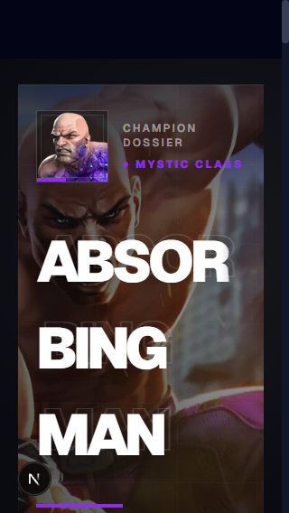
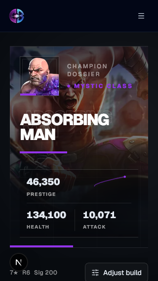
Same champion and build. Matched CSS viewport; section views align the reading location. Before: Chromium, signed out. After: Firefox fallback, signed in. Font rendering, scrollbars and account controls can differ. Screenshots are actual captures.